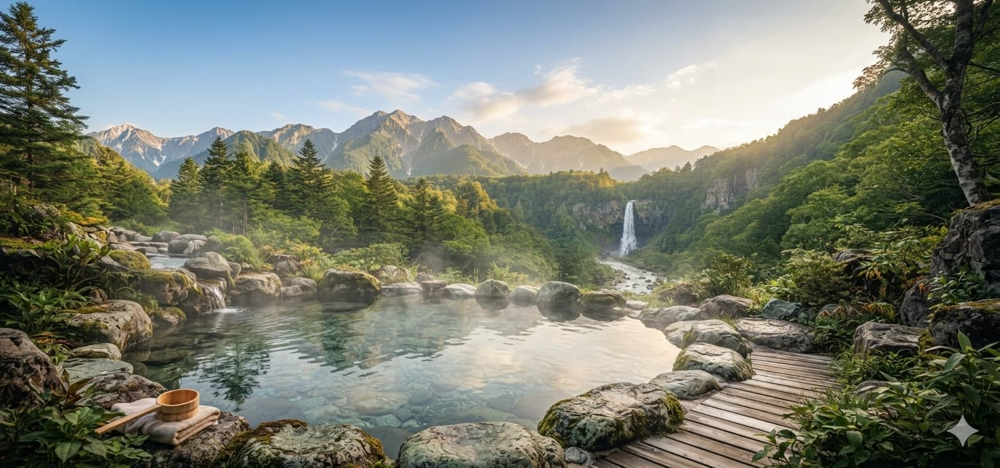
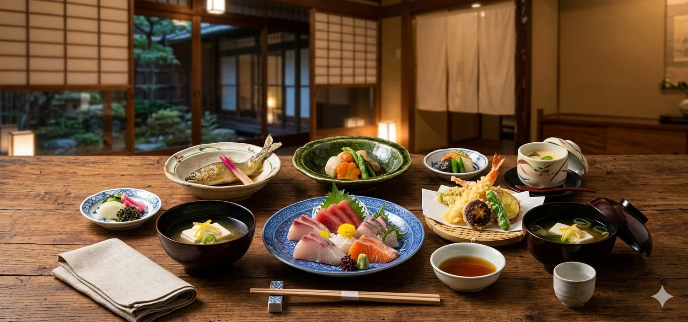
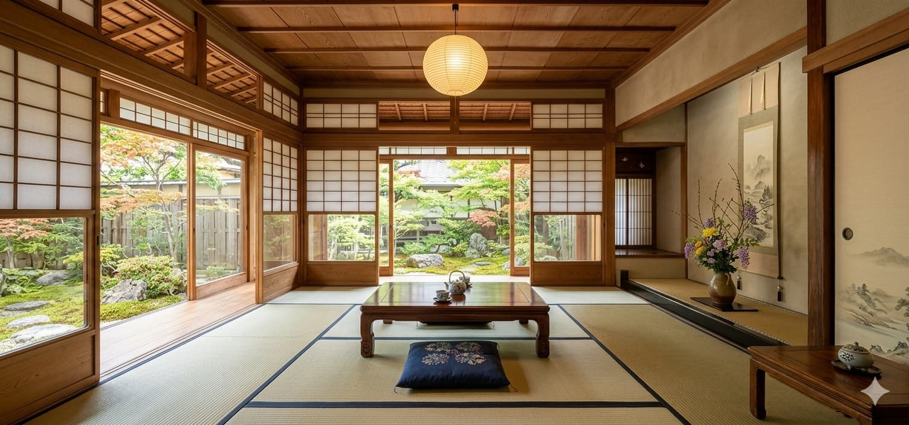
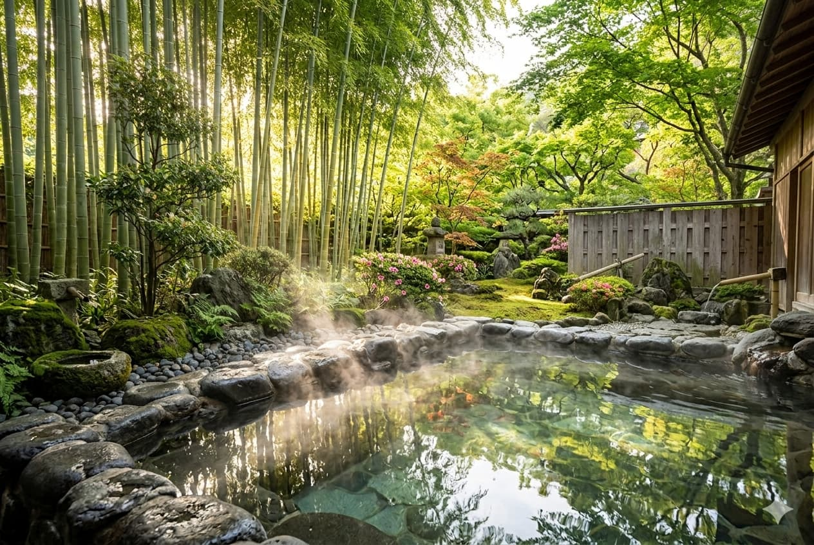
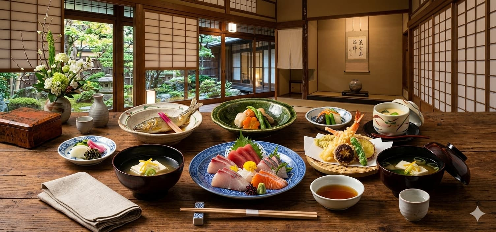

創業八十年、守り継ぐ源泉かけ流しの贅

地元契約農家の朝採れ野菜と銘柄牛会席

全室渓谷ビューの静謐なくつろぎ空間
奥日光の清澄な大自然と、滔々と湧き出る乳白色の名湯。 「翠泉閣」は、日々の喧騒から離れ、五感を解放する特別な時間をお届けいたします。 四季の移ろいを肌で感じながら、木の温もりに満ちた湯の宿でゆったりとお寛ぎください。

一切の加水・加温を行わない天然硫黄泉。肌に吸い付くような柔らかな湯触りをご堪能ください。

地元契約農家の新鮮野菜やブランド和牛など、料理長が毎朝厳選した山海の幸を美しく仕立てます。
特急電車と無料送迎バスで快適にお越しいただけます。周辺には名勝やハイキング道も充実。